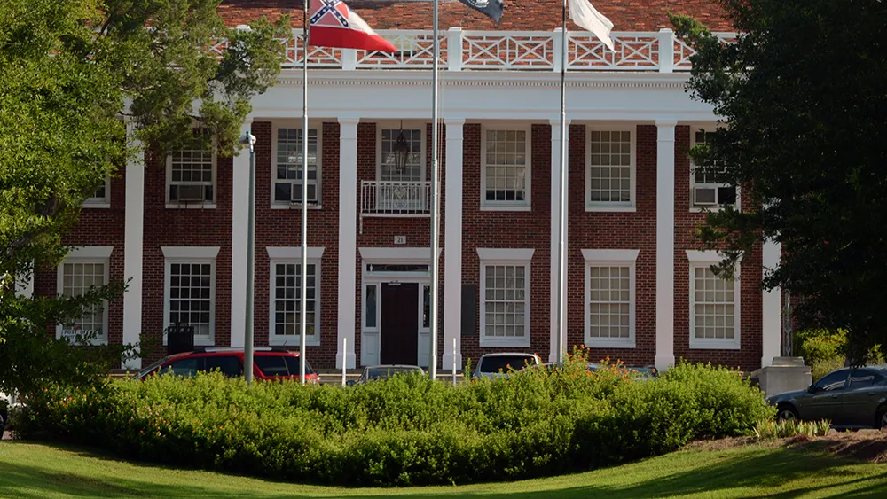
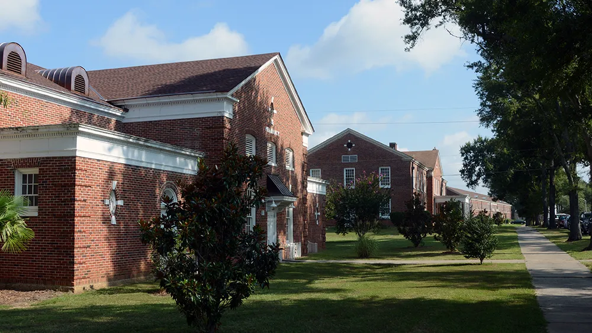
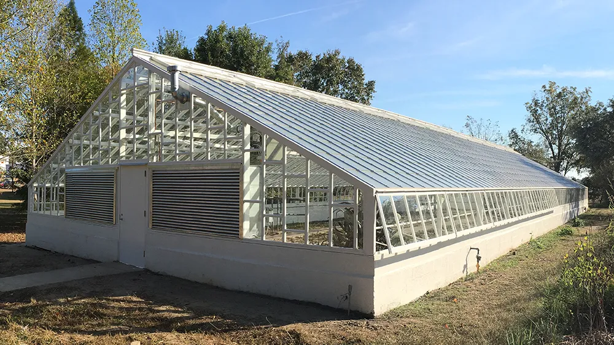
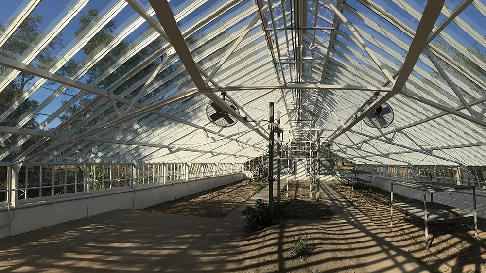

Mississippi State Hospital Renovations
Pearl, Mississippi
The original Whitfield campus of the State Hospital was built in 1935, designed by Overstreet and Town Architects. In 2013, a hail storm severely damaged or destroyed the roofs of most of these buildings. The damage to every building was surveyed, and was replaced with a roof system designed to provide longevity through durable materials, and preserve its historic integrity. The entire campus was designed in the Colonial Revival style, often requiring intricate details for roof elements such as cupolas, copper dormers, integral copper gutters and flashings. All of these elements were retained, whether repaired or replaced.
109 Campus Buildings
Total Roof Area: 990,900 gsf



